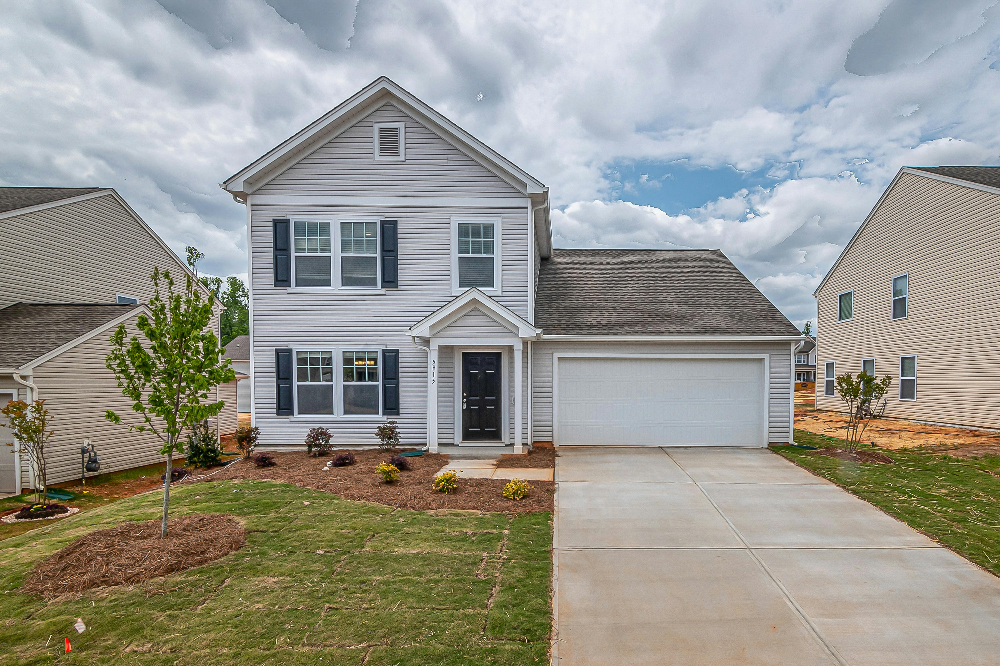
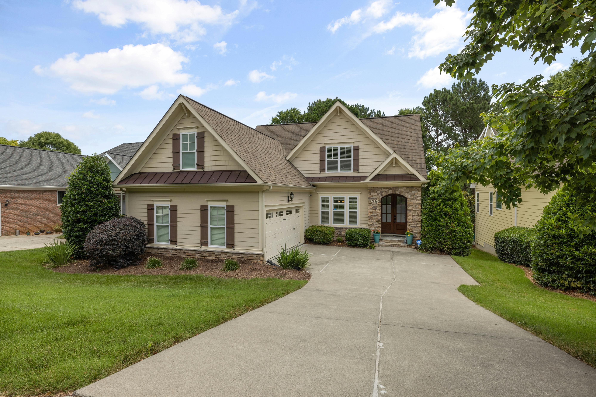
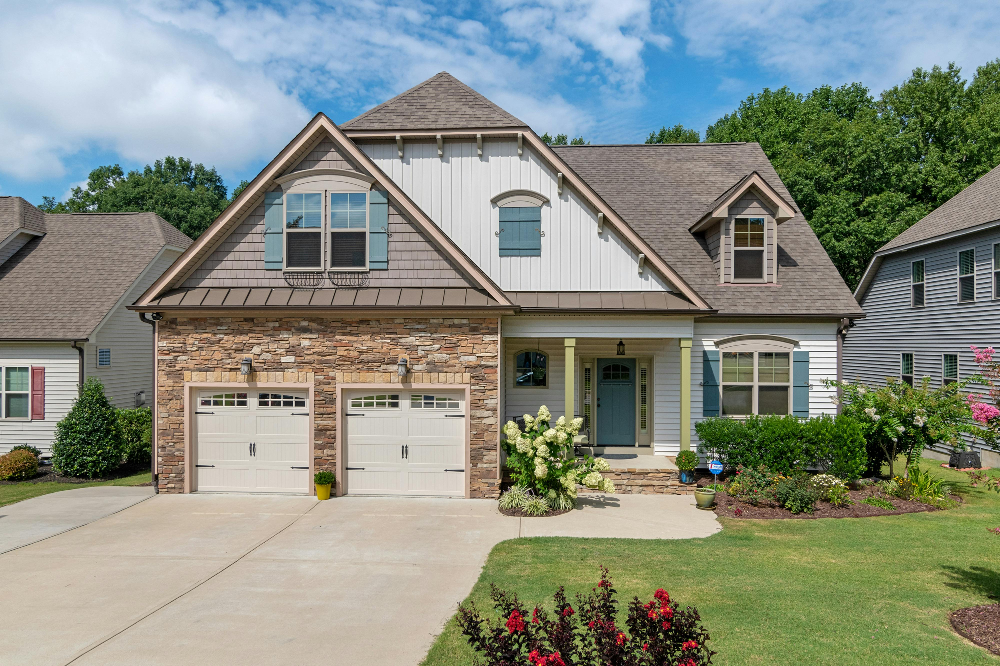
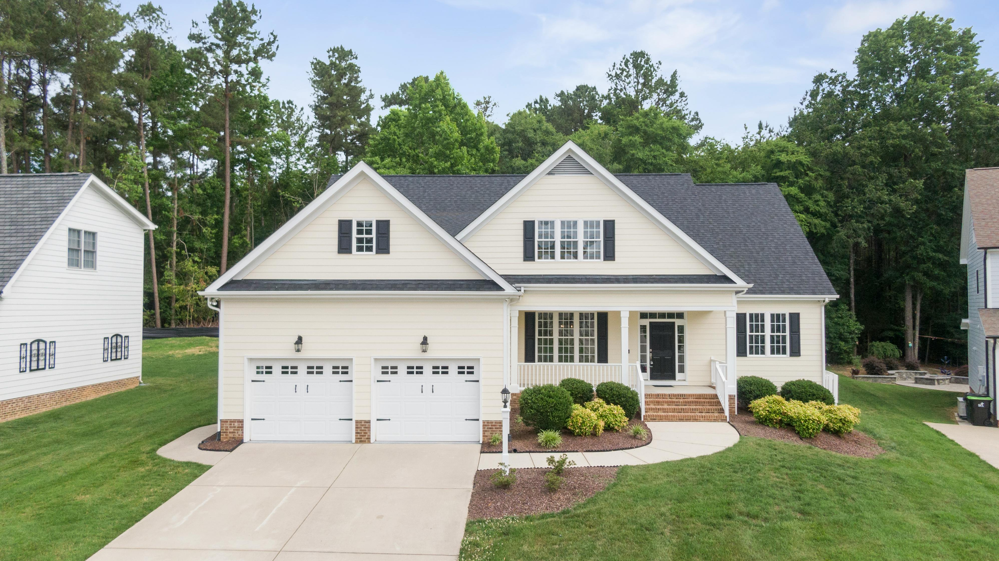
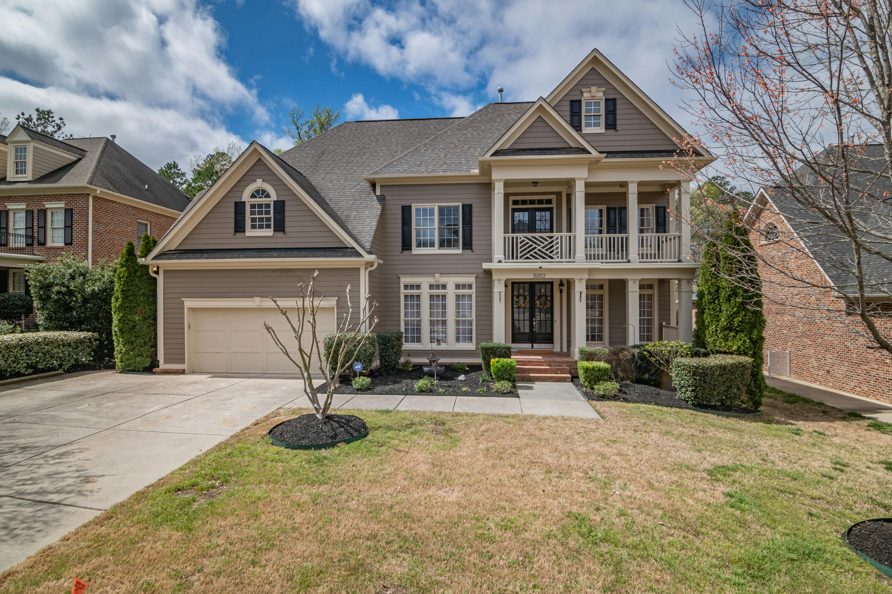

Wesley Chapel Communities
From Epperson to Wiregrass Ranch to Quail Hollow — LawnWorx knows Wesley Chapel's HOA standards and delivers on them every visit.

Epperson Ranch
First Crystal Lagoon community in the USA. Strict Metro Development Group HOA standards. LawnWorx serves both Epperson Ranch and Epperson North with weekly, HOA-compliant service.
Epperson Page →
Wiregrass Ranch
Upscale master-planned community near SR-54 and I-75. Premium residential neighborhood with strict HOA standards and active community enforcement.

Seven Oaks
Established Wesley Chapel HOA community with consistent curb appeal standards. St. Augustine Floratam maintained at proper height with clean vertical edging on every visit.

New River
Residential community in Wesley Chapel 33545. LawnWorx provides full weekly lawn care service for New River homeowners including mowing, edging, and fertilizing.

Watergrass
Growing master-planned community on SR-54. New construction homes need careful first-year establishment mowing. Builder-installed Floratam requires proper early care.

Quail Hollow & Persimmon Park
Family-friendly Wesley Chapel communities with active HOAs. LawnWorx serves both neighborhoods with complete weekly lawn care and mulch services.